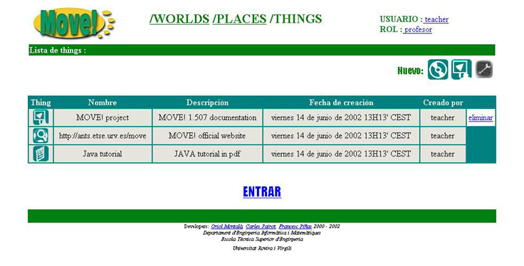

2.4 Zona Things
Despu�s de entrar en un Place nos encontraremos en la zona THINGS del Place y World seleccionados con anterioridad.

Aqui se nos mostrar� una tabla que contendr� todas las Things que hay en el Place donde nos encontramos. Cada Thing contendr� la siguiente informaci�n:
- Thing: icono correspondiente al tipo de Thing
 thing de tipo Slides
thing de tipo Slides thing de tipo Simulation3D
thing de tipo Simulation3D thing de tipo Audio
thing de tipo Audio thing de tipo Banner
thing de tipo Banner thing de tipo File
thing de tipo File thing de tipo URL
thing de tipo URL thing de tipo Votation
thing de tipo Votation thing de tipo VideoStream
thing de tipo VideoStream thing de tipo VideoStream2
thing de tipo VideoStream2 thing de tipo Video
thing de tipo Video thing de tipo Object
thing de tipo Object thing de tipo Information
thing de tipo Information- Nombre: nombre de la Thing
- Descripci�n: descripci�n de la Thing
- Fecha de creaci�n: fecha en la cual ha sido creada
- Creado por: login del usuario que la ha creado
Los diferentes tipos de iconos con los que nos encontraremos seran los siguientes:
Adem�s tendremos la oportunidad de eliminar todas aquellas Things que ya no nos interesen clicando sobre  , excepto las de tipo File, URL y Object las cuales solo podran ser eliminadas desde el interior del entorno 3D del Place. (NOTA: Solo podremos eliminar una thing en el caso de que haya sido creada por nosotros o bien si nuestro rol es el de administrador)
, excepto las de tipo File, URL y Object las cuales solo podran ser eliminadas desde el interior del entorno 3D del Place. (NOTA: Solo podremos eliminar una thing en el caso de que haya sido creada por nosotros o bien si nuestro rol es el de administrador)
A parte de esta tabla tambien podremos observar que aparecen una serie de iconos en la parte superior de �sta:
Corresponde a la barra de Tools activas en este Place y que, adem�s, permiten crear Things de su tipo solamente fuera del entorno 3D. Clicando sobre el correspondiente icono de la Tool iremos a la pantalla donde podremos crear Things para esta Tool.
El iconoUna vez hayamos terminado nuestras acciones en esta zona ya solo nos quedar� clicar sobre para poder entrar en el entorno 3D del Place y empezar a interactuar con las tools que nos ofrece MOVE! y sus diferentes usuarios conectados.